Travelogues & wildlife safaris
Wander for DistractionTravel for Fulfilment
India · Africa · The Americas · The Pacific
64 stories from 7 countries, written and photographed by Bhupender Gupta.
to explore
Hi, I’m
Bhupender Gupta
Traveller · Writer · Photographer
A technocrat by education and a businessman by profession, I now travel to exotic destinations across the globe, take pictures with my own camera, and pen the experience so you can enjoy it too.
From the Writer’s Desk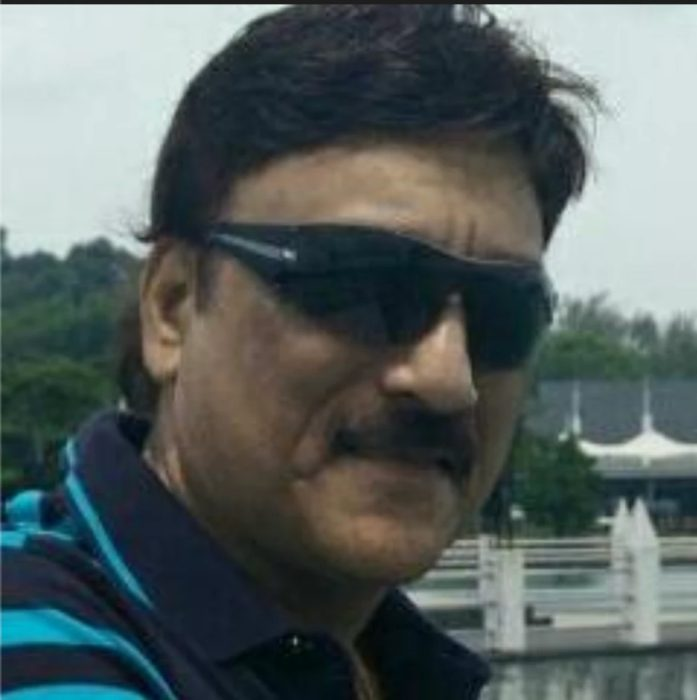
Good photos,
better stories
- Every photo, his ownShot first-hand on every journey
- A passion for explorationMountains, oceans, cities and jungles
- Wildlife at heartTigers, leopards and the great migration
Destinations
A Story for Every Journey


Latest story · Kenya
Masai Mara Conservancy – Part 4
Masai Mara is a wildlife reserve in Kenya, known for its rich diversity of animals and breathtaking landscapes. The wildlife in Masai Mara is a sight to behold, with over 95 species of mammals and over 570 species of bi…
Read the StoryNot all those
who wander
are lost.
All stories
Every Journey, by Destination
USA
East Coast 2 stories

Virginia, also Commonwealth of Virginia
11 January 2020

Statue of Liberty, CRRNJ Terminal and Ellis Island
1 February 2020
West Coast 9 stories

LAS VEGAS – Where even Gods can gladly Gamble & Priests can Peacefully Play
9 February 2018

Las Vegas to Los Angeles, the La-La Land… the House of Hollywood… where Stars Metamorphose into Humans
3 March 2018

Self-drive from Los Angeles to San Francisco
30 June 2018
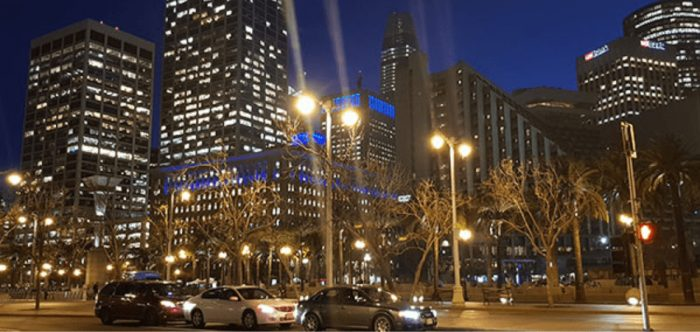
Travel blog on San Francisco, Alcatraz Island and Muir Woods
14 July 2018
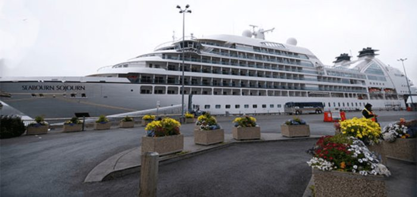
Travel to Alaska – 11 Days cruise through Wilderness – Part 1
22 September 2018
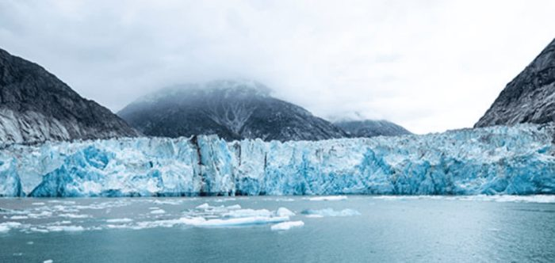
Wrangell, Sitka and Dawes Glaciers on Cruise to Alaska – Part 2
6 October 2018
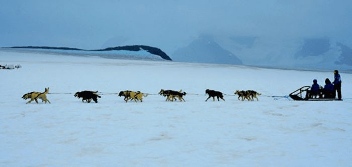
Juneau, Inian Island, Icy Strait: Cruising with Seabourn to Alaska
13 October 2018
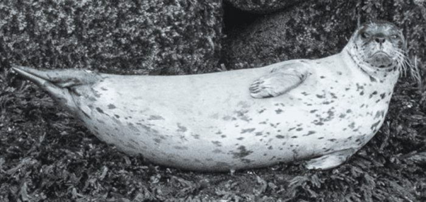
Seward to Anchorage and to Denali by Wilderness Express
27 October 2018
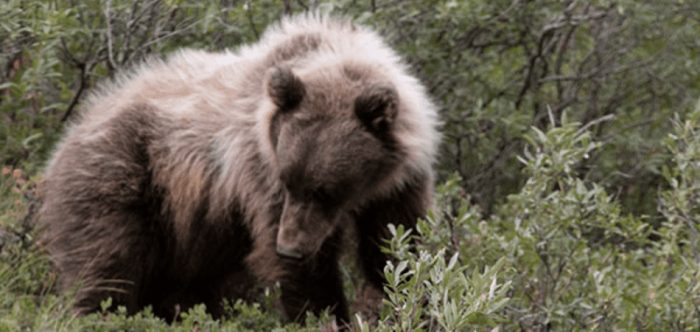
Denali National Park and Preserve, Alaska
10 November 2018
Tanzania


Canada
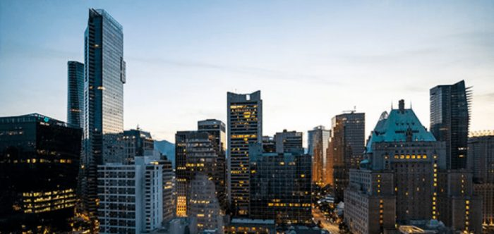
Vancouver, Seaport in British Columbia, Canada
17 November 2018
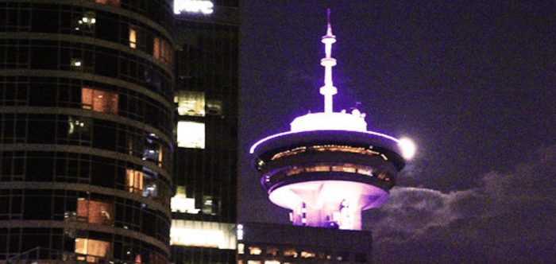
At Vancouver Peninsula post Cruise Part II
8 December 2018
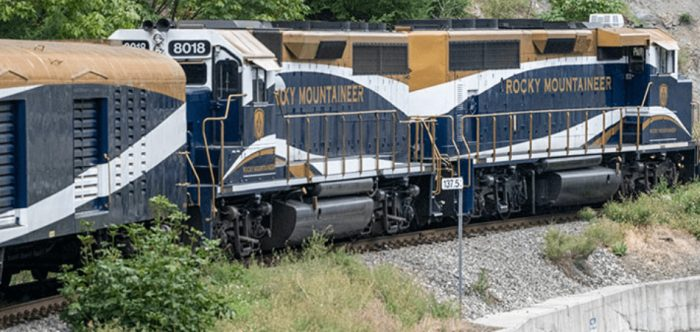
Canadian Rockies via Whistler in Rocky Mountaineer
31 August 2019
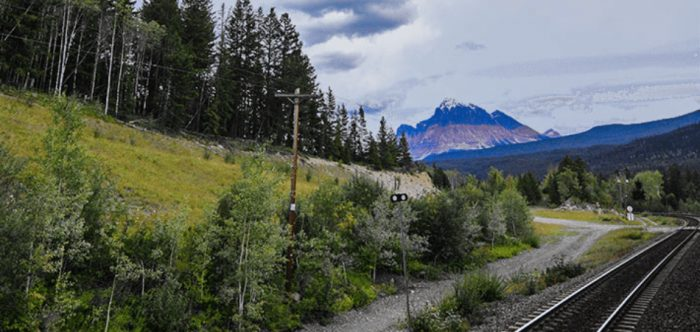
Canadian Rockies by Rocky Mountaineer. Part 2
6 September 2019
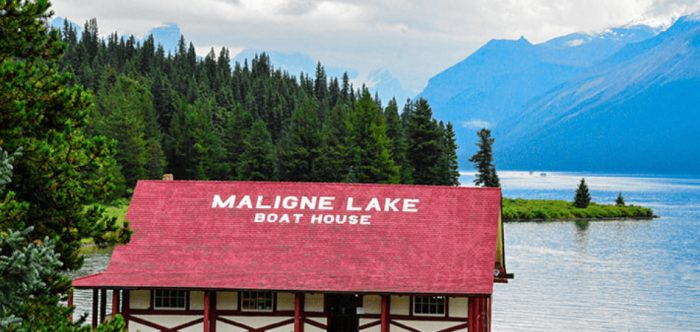
Joy of Jasper – Gentle Giant of Canadian Rockies
20 September 2019
Jasper to stunning hamlet in Alberta – Lake Louise
4 October 2019
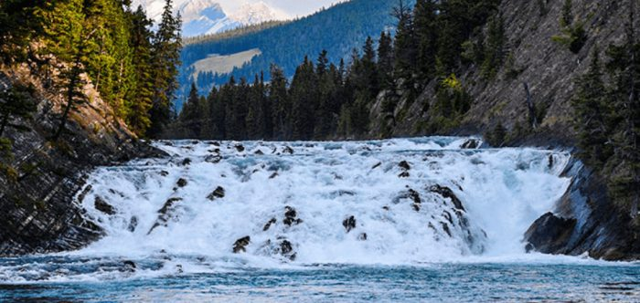
Lake Louise to Banff – Canadian Rockies
26 October 2019
Legendary Niagara Falls of Canada
7 December 2019
Kenya


India
Leh Ladakh 4 stories

Gulmarg to Leh-Ladakh via Sonmarg and Kargil
21 December 2017

Nice Nubra in Ladakh
26 December 2017

Ethereal Pangong Lake in Ladakh
3 January 2018

Mesmerizing Beauty of Leh-Ladakh accentuated with ubiquitous Monasteries
28 July 2018
Jawai 1 story

Ranthambore 4 stories

Ranthambore National Park – Day 1
12 June 2019

Tigers Galore at Ranthambore National Park Day 2
5 July 2019

Bengal Tigers at Ranthambore National Park Day 3
20 July 2019

Concluding Day at Ranthambore National Park – Day 4
2 August 2019
Jhalana 1 story

Manas National Park 3 stories

Manas National Park, Assam – Day 1
2 April 2019

Golden Langurs at Kakoijana, Assam, India
18 April 2019

Manas National Park to Bhutan Day 3
11 May 2019
Bhigwan 1 story

Kashmir 5 stories

Srinagar in strife – Houseboat No 5
14 August 2017
Pictures – Sight Seeing Srinagar
28 August 2017

Sight Seeing Srinagar in unprecedented Strife
28 September 2017

Visit Pahalgam, in throes of militancy
15 November 2017

Mesmerizing Kashmir in Winter
5 January 2019
Jim Corbett 1 story

Spiti Valley 3 stories

Picturesque Spiti Valley in Himachal Pradesh, India – Part 1
26 November 2021

Tabo to Kaza in Picturesque Spiti Valley – Part 2
24 March 2022

Langza to Manali through Picturesque Spiti Valley – Part 3
30 December 2021
Tadoba 2 stories


French Polynesia

Cruise through French Polynesian Islands, with Paul Gauguin. Huahine to begin with
21 March 2018

Paul Gauguin Cruises from Huahine to Taha’a in the French Polynesia
3 April 2018

Snorkel & Scuba with Sting Rays and Lemon Sharks at Lagoons in Luxurious Bora Bora
8 May 2018

Moorea, the Island and its Incredible Bay, Hollywood Favourite
26 May 2018
New Zealand

Romancing New Zealand, 11 days, 3000 Miles on wheels
20 July 2017
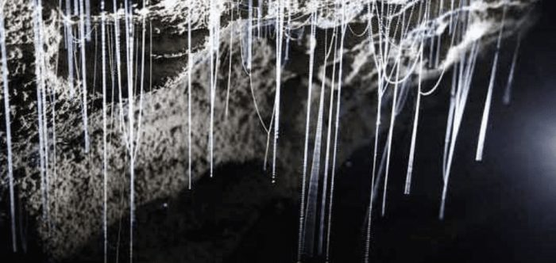
Cave your way to heaven @ Waitomo – NZ
21 August 2017
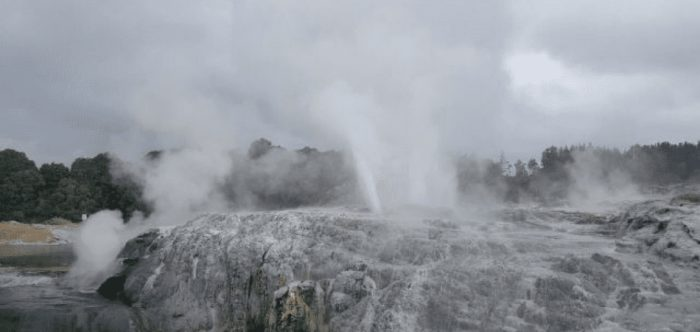
To Rotorua from Waitomo Caves, Land of mesmerizing Geysers
4 September 2017
From Rotorua to Wellington to Picton
21 October 2017
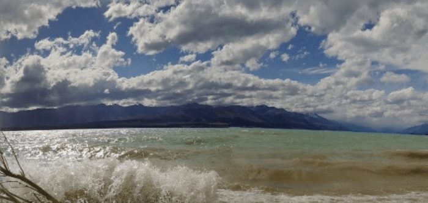
Christchurch to Queenstown to Milford Sound
6 October 2017
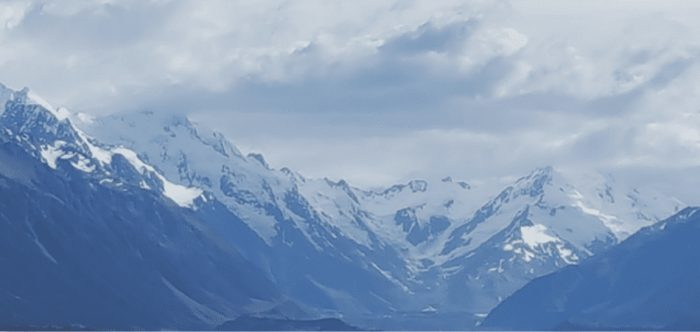
Rendezvous with towering Mount Cook in New Zealand
17 October 2017
“Let these travelogues inspire and motivate you to pack your bags, book your tickets and plan your next destination.”
Let’s talk travel
Planning Your Next Journey?
Questions about a destination, a safari or a photograph? I’d love to hear from you.
Get in TouchEvery journey
has a story.
Follow my journey